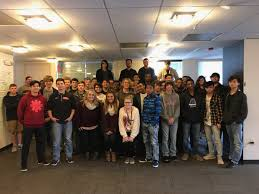

My expereince at Archer-Malmo was an excellent experience, I enjoyed my time listening to all the guys that work there and the things that they go through in their every day life at Archer-Malmo. Overall, Making websites seems like a pretty cool job to have; seeing the fact that they get a sit on a couch while working and drinking coffee. I very much enjoyed the tour because it was an "inside scoop" on how the business operates, and a chance to see the innovative offices.
When we first arrived at Archer>Malmo, I didnt know what to expect. I got off of the bus thinking that It was a tour of a building and only a tour. I didn't realized that the web designers of Archer>Malmo actually took away time from their normal business day to talk to high schoolers about their daily rouine, An informative presentation was shown to us, which really broadened my views of a tech career, not just designing and coding; but in all aspects. I could tell that the guys enjoyed speaking to us because they have a passion for their work and that alone is an inspiration.
